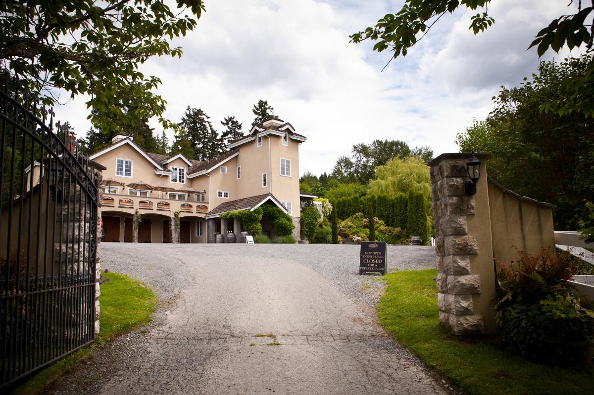
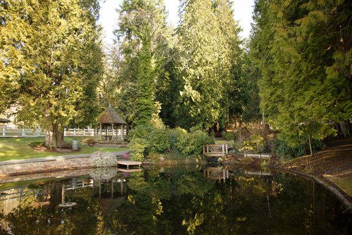
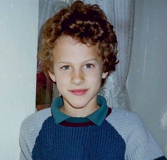
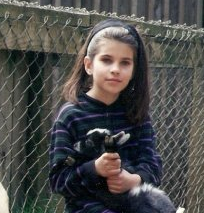

The ceremony and reception will take place on September 17, 2017
at DeLille Cellars Chateau in Woodinville, Washington.


DeLille Cellars Chateau
is located on the east side of Woodinville-Redmond
Rd NE, across the street from the Woodinville Lavender farm.
If you are coming from I-405, take exit 20 by Totem Lake
heading east on NE 124th St. After 2.3 miles, turn left/north
on Woodinville-Redmond Rd NE. The venue is on the right after
1.2 miles.
A note of caution: there are two other DeLille Cellars locations on most GPS services.
One is the tasting room down the road in Woodinville and the other is the Maison DeLille wine lounge
in Kirkland. Make sure you have the right address!
14208 Woodinville-Redmond Rd NE
Redmond, WA 98052
See the map below for the exact location.

Tobias Jungen was born in a village outside of Bern, Switzerland to an American mother and a Swiss father. Growing up he enjoyed
climbing chestnut trees, constructing model gondolas, skiing and tinkering with a Commodore 64.
Unsurprisingly, he received a Bachelor's in Computer Science at the University of Texas at Austin. He spent several years working on language technology in Dallas before moving to Seattle for a software engineer position at Google where he works on the Maps team.

Anne Kimsey grew up in Vancouver, Washington where the majority of her family still lives. She received a Bachelor of Arts in Linguistics from the Evergreen State College. After graduating she stumbled upon her strong interest in computer programming while volunteering as an English teacher. She subsequently moved to Seattle to pursue a career as a software engineer.
She has worked with the University of Washington to produce public health visualizations for the Gates Foundation, at Microsoft in cloud computing, and most recently in frenetic world of an early stage startup.
Highlight 1
June 20, 2013
Love at first byte
Our first few OKCupid messages were about the Sapir Whorf Hypothesis. We found each other kind of pretentious, but decided to meet up anyway.
Highlight 2
July 5, 2013
Our first date was at a German-themed pub in Ravenna. Highlights included being pleasantly surprised that we both resembled our pictures, agreeing that Curry Catsup is not just curry powder sprinkled over ketchup and a whole lot of butterflies.
Highlight 3
April 2014
First international Trip.
We both knew that we couldn't be in a long-term relationship with someone who wasn't a good travel companion. We put this to the test by taking a week-long visit to Switzerland and Paris. It was a whirlwind tour that involved:
- getting stranded for 11 hours at Heathrow (Anne)
- some sort of plane-borne gastrointestinal pathogen (Anne then Toby)
- discovering that we have very different opinions about the best cheese
- trespassing on an abandoned Parisian railway
We called it a success.
Highlight 4
Late 2014
Changes
Anne completed her training at Ada Developers Academy, internship at Expedia and signed her first software developer job offer. Toby made the switch from chat products to maps.
Highlight 5
2015 - 2016
Continued Travels
After our first trip, we couldn't get enough of traveling together. We drank rum and sat on beaches from Martinique to Kauai. We had the best poutine in Montreal. We saw the midnight sun in Norway and Europe's largest Christmas Market in Strasbourg.
Highlight 6
April 21, 2016
We moved in together!
We made sure to get an apartment with enough windowsills for Galileo to lay in and watch the world go by. (Or in our case: watch the Amazon campus construction)
Highlight 7
November 12, 2016
Proposal
On a stormy weekend in November, three days after Anne's birthday, we set off for an eventful trip to Lopez Island. The wind caused us to miss a flight and a charter boat. We met a taciturn Swedish boat captain who lectured us about Scandinavian hypocrisy and a taxi driver who told us stories of stolen dogs and scrap metal in a tobacco scented van. We stubbornly walked firewood from gas stations on two islands onto the ferry and back to our B&B so we could have the much anticipated first fire of the season.
We decided to spend our lives together in front of that fire. It was unrehearsed and heartfelt and very, very us.
Highlight 8
November 13, 2016
Wedding Planning Begins
The next day, we missed the ferry from Lopez to Anacortes by one car. We called into work and spent the ensuing six hours of the unusually clear post-storm day wandering the beach at Odlin County Park and trying to put off the realization that wedding planning doesn't happen on its own.